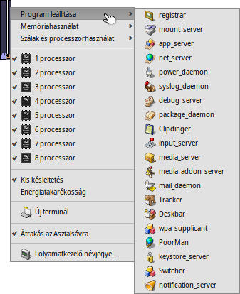
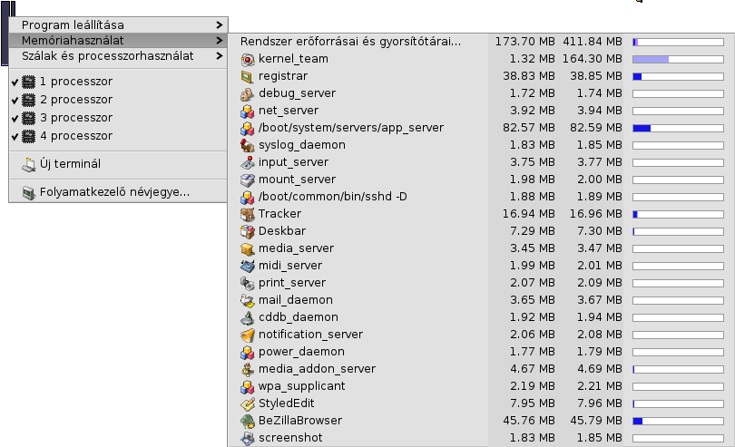

Magyar
Magyar Català
Català Deutsch
Deutsch English
English Español
Español Français
Français Italiano
Italiano Polski
Polski Português
Português Português (Brazil)
Português (Brazil) Română
Română Slovenčina
Slovenčina Suomi
Suomi Svenska
Svenska 中文 ［中文］
中文 ［中文］ Русский
Русский Українська
Українська 日本語
日本語 Folyamatkezelő (ProcessController)
Folyamatkezelő (ProcessController)
| Asztalsáv: | ||
| Útvonal: | /boot/system/apps/ProcessController | |
| Bellítások: | Nincs |
 A program elsődleges feladata a processzor(ok) és a memória kihasználtságának kijelzése. Ezen kívül lehetőséget nyújt a különféle folyamatok figyelésére, azok prioritásának módosítására, illetve a bezárásukra hiba esetén. Több processzoros gép esetén a processzorok/magok akár ki is kapcsolhatóak. Ha a Nyomkövető vagy az Asztalsáv futása (program)hiba miatt leáll, akkor azokat a menüből újra is indíthatjuk.
A program elsődleges feladata a processzor(ok) és a memória kihasználtságának kijelzése. Ezen kívül lehetőséget nyújt a különféle folyamatok figyelésére, azok prioritásának módosítására, illetve a bezárásukra hiba esetén. Több processzoros gép esetén a processzorok/magok akár ki is kapcsolhatóak. Ha a Nyomkövető vagy az Asztalsáv futása (program)hiba miatt leáll, akkor azokat a menüből újra is indíthatjuk.
A bal oldali kijelző a processzor-használatot, míg a jobb oldali a memória használatát mutatja. A kijelzők száma a gépben található processzorok/magok számától függőn változhat.
Ha még nem fut a Folyamatkezelő, akkor indításkor megkérdezi, hogy ablakban fussun vagy az Asztalsávon helyezkedjen el. Ha ablakban fut, akkor azt átméretezhetjük, és akár Replikánsként is használhatjuk.
Bárhogy is fusson, egy helyi menü a rendelkezésünkre áll.
Ha törölni szeretnénk a programot a Polcról, akkor csak kattintsunk az elemen a menüben.
Kilépés a programból
Egy program/folyamat bezárásához csak annak nevére kell kattintani a menüben. Ez a művelet megegyezik azzal, amikor a program bezárás gombján kattintunk. Arra azonban ügyelni kell, hogy a rendszer folyamatait (például *_server, *_daemon) ne zárjuk be, mert akkor annak működése veszélybe kerülhet.
Memória-használat
A memória-használat kijelzése pontatlan lehet.
Ez a menü lehetőséget nyújt a különböző folyamatok memória használatának figyelésére. A folyamat mellett két oszlop is található: az első a fenntartott írható memóriát, a második pedig az összes memóriát jelzi (például a funkciótárak által használt memóriát is).
Az első sor, a Rendszer erőforrásai és gyorsítótárai..., a rendszer és az összes program által használt memóriára vonatkozik. A kék sáv hossza a fizikai memória mennyiségének függvénye. A további sorok a programok memória használatát jelzik. A sávok hossza a jelenlegi memória használat függvényében változik, és a rendelkezésre álló memória mennyiségén alapul.
| Az adott program által használt (írható) memória. | ||
| A memória a csak olvasható területet is beleszámítva (amiket a programok egymás közt megosztanak). |
Processzor és szál használat
Ez a menü arra ad lehetőséget, hogy a szálak prioritását módosítsuk, a programokat leállítsuk vagy hibát keressünk bennük.
| Kernel kód | ||
| Felhasználói kód | ||
| Szál üresjáratban |
Az első szinten a futó programok találhatóak. A rajtuk való kattintással bezárhatóak. A sáv sötétkék része a kernel kódban töltött idő, a világoskék a felhasználói kódban, míg a zöld az üresjáratban eltöltött időt jelzi. A kékkel teljesen kitöltött sáv esetében az adott program használja ki a processzor összes erőforrását.
A második szint a program száljait mutatja. Az ezen való kattintással vagy hibát kereshetünk, vagy megszakíthatjuk azt. Ha a sáv teljesen kékkel van kitöltve, akkor a szál egy processzort/magot lefoglal.
Az utolsó szinttel a szál prioritása módosítható. Csak óvatosan! Egy óvatlan mozdulat, és a szál máris az ellentétes mértékben fogja kihasználni a processzort. A processzor idő növekedése az alacsony prioritás eredménye. A prioritással nem ajánlott játszadozni, ugyanis a program készítőjének a dolga, hogy megfelelőt használjon a programja. Ha szükséges, akkor lépj kapcsolatba vele.